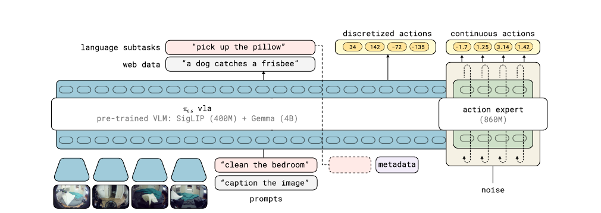

π0.6
A stronger out-of-the-box VLA through a larger backbone and knowledge insulation.
π0.6은 π0.5의 hierarchical VLA를 유지하면서 backbone, prompt, 학습 레시피를 다듬은 기본 모델이다. 목표는 개별 작업에 맞춘 fine-tuning 없이도 더 빠르고 안정적으로 새로운 manipulation task를 수행하는 것이다.
What Changed
π0.5의 open-world recipe를 더 강한 기본 policy로
Larger VLM backbone
SigLIP vision encoder와 Gemma 3 4B를 사용한다. action expert는 backbone과 같은 layer 수를 가지며 약 860M parameter로 구성된다.
Richer prompting
작업 언어 명령뿐 아니라 수행 방식에 영향을 주는 metadata를 prompt에 넣을 수 있다. 하나의 모델이 다양한 조건을 받아 행동을 조절하게 한다.
Out-of-the-box performance
핵심 평가는 task-specific post-training 없이 진행된다. 즉 새 데이터로 해당 task만 다시 맞추지 않은 기본 policy의 성능을 비교한다.
Architecture
FAST로 넓게 배우고, flow matching으로 연속 행동을 낸다
최대 네 장의 카메라 이미지, tokenized language prompt, tokenized proprioceptive state가 모델 입력이 된다. backbone은 FAST action token과 web co-training example을 예측하고, 별도의 action expert는 continuous action chunk를 flow matching으로 생성한다.

Vision and language path
image token은 서로 bidirectional attention을 사용하고, text token은 causal attention을 사용한다. 이 경로는 VLM의 의미 지식과 FAST 기반 action token 학습을 담당한다.
Action expert
noisy continuous action을 입력받아 denoising 방향을 예측한다. action token끼리는 bidirectional attention을 사용해 action chunk 전체를 함께 생성한다.
Knowledge Insulation
action expert의 gradient가 main VLM backbone으로 되돌아가지 않게 한다. 따라서 VLM의 일반적인 vision-language 지식은 보존하면서, expert는 정밀한 motor control에 전문화된다.
Data & Runtime
π0.5의 이질적 데이터 혼합을 이어받는다
cross-embodiment robot data, home 환경의 mobile/non-mobile data, high-level subtask prediction, web multimodal data를 함께 사용한다. bounding box와 keypoint prediction 같은 vision-language supervision도 포함한다.
Diverse data + metadata conditioning
모델 카드의 주장에 따르면, 다양해진 데이터와 풍부한 조건 정보 덕분에 이전에 필요했던 curated task-specific fine-tuning을 줄일 수 있다.
Practical inference
카메라 세 장과 flow denoising 5 step 조건에서 단일 H100 GPU로 action chunk 하나를 생성하는 데 63 ms가 걸린다고 보고한다.
Results & Takeaway
성능 향상의 초점은 “더 적은 task-specific 적응”
static, mobile, generalization-focused task 전반에서 π0.5보다 throughput을 높였고, 일부 task에서는 task progress와 성공률도 함께 개선했다. 특히 이전에는 별도 fine-tuning이 필요했던 laundry folding과 box assembly에서 기본 모델만으로도 의미 있는 성능을 보였다는 점이 중요하다.